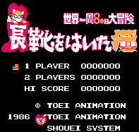

Puss 'n' Boots - Nintendo Games

- Company: Toei/Shouei System
- Date Released: 1986
- Genre: Platform game
From Doug Cranston:
This game is based on the anime starring Toei's mascot Perrault (named after the author of Puss 'n' Boots). This
game is based very closely on the Puss 'n' Boots movie Around the World in 80 Days where you must
make it around the world to win a bet using all different forms of transportation while avoiding cat guild asassins (they
want to kill Perrault because he has mice for friends). Fun game with lots of variety.
Anime Video Game Resource Center © 1998 by Luis A. Cruz